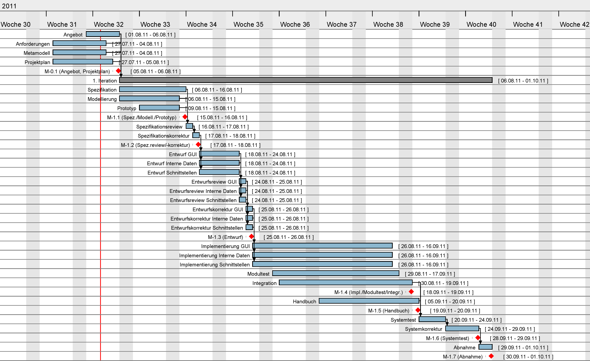

Einleitung
Zweck, Abgrenzung
Projektüberblick, Motivation
Formale Grundlagen
Vertragliche Anforderungen an die Projektdurchführung
Prozess...
Vertragliche Anforderungen an das Produkt
Java Conventions
Vertragliche Anforderungen an die Konformität mit Normen
?
Leistungen der Vertragspartner
Lieferumfang (Software, Dienstleistungen, Dokumente)
Resultate, die nicht zum Lieferumfang gehören
Leistungen des Auftraggebers
Externe Meilensteine
Abnahmeprozedur
Änderungsverfahren
Entwicklungsprozess
Strategie für die Entwicklung und Integration
Für die Entwicklung wird ein iterativer Prozess angestrebt. Dabei soll eine Iteration etwa 2 Monate lang dauern und einen präzise definierten Entwicklungsfortschritt des gesamten Systems umfassen. Innerhalb der Iteration wird dazu ein Wasserfallmodell angewandt, um innerhalb der kurzen Zeitspanne möglichst zügig und dynamisch entwickeln zu können. Dies bedeutet insbesondere, dass die Richtung gegen den normalen Fluss nur im Ausnahmefall beschritten werden und der klare Fokus auf der zügigen Durchführung des Wasserfalls liegen sollte.
Um die Integration zu realisieren, soll das stetige Modell der "Continous Integration" eingesetzt werden.
Projektspezifische Abweichungen vom Standardprozess
Während der Analyse wird in keiner Iteration ein separates Analysedokument erstellt werden. Die Integration wird nicht als Phase des Wasserfallmodells verstanden, sondern kontinuierlich durchgeführt.
Phasen der Entwicklung
Die Entwicklung wird in mehrere Iterationen gegliedert, die klar abgegrenzte Phasen darstellen. Innerhalb einer Iteration werden dann folgende Phasen durchlaufen, wobei eine Phase durch den Wasserfallprozess unter Umständen mehrfach durchlaufen wird:
- Spezifikation, Modellierung & Prototyping
- Review & Korrektur der Spezifikation
- Entwurf
- Implementation & Modultest mit kontinuierlicher Integration
- Handbuch
- Systemtest
- Abnahme
Dokumentationsplan
Alle eigenständig entstehenden Dokumente werden einheitlich in HTML verfasst, da dies sowohl einfach bearbeitbar als auch gut versionierbar ist. Dokumentation im Code soll durch JavaDoc-Kommentare gemäß den entsprechenden Richtlinien ununterbrochen stattfinden.
Prüfungen (Reviews und Tests)
Das Spezifikationsreview soll in jeder Iteration stattfinden, um die Fehler der Spezifikation besonders unter Kontrolle zu behalten, da diese sehr gravierende Auswirkungen haben können. Da insbesondere auch in der ersten Iteration mit dem Entwurf das Grundsystem wesentlich modelliert wird und weitere Änderungen nicht unbedingt einfach zu realisieren wären, wird in der ersten Iteration zudem ein Review des Entwurfs stattfinden.
Im Laufe der Implementierung sollen kontinuierlich Modultests entstehen, die nicht vom Codierer des Moduls verfasst werden sollen. Dazu wird durch die kontinuierliche Integration auch ein weiterer stetiger Test stattfinden. Ein abschließender Systemtest soll in jeder Iteration stattfinden.
Risiken
Risiken und ihre Bewertung, Maßnahmen zur Reduktion und Notfallpläne
Personalausfall
Risiko
Ein oder mehrere Teammitglieder könnten im Laufe des Projekts für einen begrenzten Zeitraum oder für das restliche Projekt unerwartet ausfallen. Die Gründe hierfür können von Krankheit über Lustlosigkeit bis anderweitige Verpflichtungen reichen. Dies würde sich vermutlich auf die Produktivität niederschlagen, da keine Ersatzkapazitäten vorgesehen sind.
Bewertung
Dieses Risiko ist über die Projektdauer hinweg relativ wahrscheinlich, sollte in begrenzten Einzelfällen allerdings ohne schwerwiegende Folgen für das Projekt bleiben. Wird das Team allerdings über längere Zeiträume oder in beträchtlichem Maße dezimiert, so wären die Folgen für das Projekt gravierend.
Gegenmaßnahmen
- Ernennung eines stellvertretenden Projektleiters
- Großräumige Verteilung des Know-Hows dadurch, dass alle Teammitglieder in jeder Phase mitarbeiten.
Notfallpläne
Im Notfall sollte so früh wie möglich ein Betreuer über den Umstand informiert werden. Des Weiteren muss die weiterführende Planung überprüft und gegebenenfalls dem reduzierten Team angepasst werden.
Ausfall der Infrastruktur
Risiko
Die Technik, die zur Bereitstellung von Konfigurationsverwaltung und Projektverwaltung dient, könnte unerwartet komplett ausfallen. Dabei ist auch ein lokaler Datenverlust nicht ausgeschlossen.
Bewertung
An und für sich ist ein zeitlich begrenzter Ausfall über die Projektdauer äußerst wahrscheinlich. Einen schwerwiegenden Einfluss sollte dieser jedoch nicht haben, abhängig davon, ob Änderungen in Konfigurations- oder Projektverwaltung in dieser Zeitspanne getätigt werden sollten. Ein Datenverlust ist relativ unwahrscheinlich und wäre für sich genommen natürlich desaströs. Ein kompletter Datenverlust durch die getroffenen Gegenmaßnahmen ist extrem unwahrscheinlich.
Gegenmaßnahmen
- Backup des Repositorys sowohl indirekt bei jedem Teammitglied als auch bei Google Code
- Regelmäßige Backups der Redmine-Daten, teilweise Backups der Backups
- Keine Arbeitsbehinderung während Verbindungsausfällen durch Lokalität von Git
Notfallpläne
Fällt diese Infrastruktur unerwartet aus, so ist der Verantwortliche für die Konfigurationsverwaltung umgehend zu informieren, da dies auf lange Sicht den Projektfortschritt beeinträchtigt. Stellt dieser fest, dass ein schwerwiegender Datenverlust eingetreten ist, so wird er versuchen, die Backups einzuspielen. Sollten diese ebenfalls alle vernichtet worden sein, so ist das Projekt dem Untergang geweiht und die Betreuer müssen informiert werden.
Fehlende Kenntnisse
Risiko
Teammitglieder könnten durch fehlende Kenntnisse mit Werkzeugen oder Techniken ihre Arbeit stillschweigend unzureichend erfüllen, absichtlich korrumpieren oder unabsichtlich Probleme verursachen.
Bewertung
Prinzipiell ist kein Mensch unfehlbar, sodass eine mittlere Wahrscheinlichkeit für dieses Risiko besteht. Je nach Umfang der entstehenden Probleme und der Zeitdauer, bis sie aufgedeckt werden, steigt der Schaden für das Projekt. Praktisch sollte durch die Gegenmaßnahmen sowohl Wahrscheinlichkeit als auch Folgen für ein signifikantes Problem stark reduziert werden.
Gegenmaßnahmen
- starke Ermunterung zur gemeinschaftlichen Zusammenarbeit
- fortlaufende Ermunterung, bei Problemen Experten in oder außerhalb des Teames zu Rate zu ziehen
- Einsatz eines Versionierungssystem
- Einsatz eines Qualitätssicherungsbeauftragten
- Motivation, bei guter Leistung eine "Google-Exkursion" besuchen zu dürfen
- alle Teammitglieder sind projektbedingt Softwaretechnik-Studenten und sollten Wissen um dieses Risiko besitzen
Notfallpläne
Beim Auftreten eines schwerwiegenden Problems ist abzuklären, ob dies absichtlich oder fahrlässig in Kauf genommen wurde. Ist dies der Fall, sollte der Betroffene auf dieses Verhalten angesprochen werden. Es sollte ihm die Möglichkeit gegeben werden, die fehlenden Kenntnisse zu erlernen, soweit der Zeitplan dies zulässt, z.B. durch Team Programming oder Zusammenarbeit mit einem Experten. Ändert sich seine Haltung dann jedoch immer noch nicht, sind entsprechende Kontrollmechanismen der Resultate (zB. eigener Branch, Review) einzuführen.
Fehlende Stabilität der Anforderungen
´Risiko
Der Kunde wird mit Sicherheit seine Anforderungen im Laufe des Projekts ändern. Allerdings besteht das Risiko, dass er in dies in einem Ausmaß tut, der die Entwicklung stark behindert. Ändert sich zum Beispiel bei jeder Absprache die Grundstruktur des Systems ist ein zügiger Projektfortschritt nicht mehr gewährleistet.
Bewertung
Dieses Risiko ist als geringfügig wahrscheinlich einzuschätzen, wobei seine Folgen überdurchschnittlich Probleme verursachen können, insbesondere wenn gravierende Zeitaufwände notwendig werden, um die Änderungen einzupflegen.
Gegenmaßnahmen
- Das Projekt ist ein Studienprojekt, fortlaufende großräumige Anforderungsänderungen sind nicht zu erwarten.
- Der Kunde hat selbst Softwaretechnik studiert und kennt die Problematik.
Notfallpläne
Sollten wider Erwarten ununterbrochen schwerwiegende Anforderungsänderungen auftreten, die mit dem Kunden nicht neuverhandelt werden können, so ist mit den Betreuern und gegebenfalls mit der Abteilung SE abzuklären, ob und wie weit diese im Rahmen eines Studienprojektes sinnvoll sind.
Fehlende Motivation
Risiko
Teammitglieder könnten durch eine prinzipiell unbegrenzte Anzahl von möglichen Gründen die Motivation an der Mitarbeit des Projektes verlieren und zeitlich oder andauernd unzufriedenstellende Resultate liefern.
Bewertung
Dieses Risiko ist relativ wahrscheinlich, da die Teammitglieder keinen bezahlten Arbeitsvertrag eingehen. Je nach Umfang der entstehenden Verzögerung und der Zeitdauer, bis sie aufgedeckt werden, steigt der Schaden für das Projekt. Dabei sollte dies in begrenzten Einzelfällen allerdings ohne schwerwiegende Folgen für das Projekt bleiben. Wird das Team allerdings über längere Zeiträume oder in beträchtlichem Maße dezimiert, so wären die Folgen für das Projekt gravierend. Dieses Risiko ist insbesondere gefährlich, da es sich bei den Teammitgliedern unerkannt bis zu einem spontanen Haltungsumschwung entwickeln kann.
Gegenmaßnahmen
- starke Ermunterung zur gemeinschaftlichen Zusammenarbeit
- Motivation, bei guter Leistung eine "Google-Exkursion" besuchen zu dürfen
- engagierte Projektorganisation
Notfallpläne
Fällt auf, dass die Motivation bei einem Großteil der Teammitglieder abzunehmen scheint, sollten geeignete Belohnungen oder Anpassung der Aufgaben bzw. der Zeiten stattfinden. Findet eine Ausblendung gewisser Teammitglieder statt, so sind diese darauf anzusprechen und bei Überbelastung ist eine Kompromisslösung anzustreben. Schlägt auch diese oder generell die Kommunikationsversuche zu diesem Teammitglied fehl, so sind die Betreuer zu informieren.
Schlechte Beziehung zum Kunden
Risiko
Es besteht die Möglichkeit, dass sich eine schlechte Beziehung zum Kunden entwickelt, die durch Kompromisslosigkeit, schlechter Kommunikation und fahrlässig fehlenden Absprachen gekennzeichnet ist.
Bewertung
Das Risiko ist auf Grund der Gegenmaßnahmen als geringfügig wahrscheinlich einzustufen. Da in diesem Fall dem Kunden (als Abteilung) auch eine gewisse Prüfaufgabe zukommt, sind die Auswirkungen des Risikos über das Projekt hinaus nicht absehbar. Prinzipiell ist das Risiko äußerst variabel und kann sowohl minderschwere als auch gravierende Probleme verursachen, wie z.B. komplett neben den Anforderungen vorbei zu entwickeln.
Gegenmaßnahmen
- schriftliches Festhalten der Kommunikationskanäle
- der Kunde hat selbst Softwaretechnik studiert
Notfallpläne
Sollte sich wider Erwarten eine derartige Situation einstellen, ist der Fortgang des Projekts äußerst ungewiss. Es wäre dann notwendig mit den Betreuern und gegebenenfalls der Abteilung SE eine allseits verträgliche Lösung zur Abwicklung des Projekts zu finden, ansonsten besteht eine vergleichsweise hohe Wahrscheinlichkeit, dass das Projekt scheitern wird.
Richtlinien für die Entwicklung
Konfigurationsmanagment
Zur Konfigurationsverwaltung wird Git in Verbindung mit Redmine eingesetzt. Als verteiltes Versionskontrollsystem hat Git zahlreiche Vorteile gegenüber "normalen" Versionierungssystemen, wie beispielsweise die Ausrichtung auf häufige Merges, die beliebige Integrationsstrategie und die Lokalität der Änderungen. Damit stehen zusätzlich zum Google Code Repository, das ständig unseren Fortschritt als Backup spiegelt, auf jedem Rechner, der das Repository hat, ein funktionstüchtiges Backup zur Verfügung. Damit ist Git auch außerordentlich schnell und klein. Da ein Großteil der Organisationsstruktur bereits gut mit Redmine vertraut ist, wird dieses als Ticket- und Zeiterfassungswerkzeug eingesetzt.
Design- und Programmierrichtlinien
Das Projektteam hält beim Implementieren des Java-Codes die "Code Convention for the Java Programming Language" ein. Alle Zeilenumbrüche sollen zur Kompatibilität im Linux-Stil stattfinden.
Einsatz von Werkzeugen
- Eclipse Indigo IDE zur Entwicklung des Java-Codes
- Git zur Konfigurationsverwaltung
- Redmine als Projektverwaltung und Kommunikationsplatform (Ticketsystem, Zeiterfassung, New, Wiki, Forum)
- Beliebiger HTML Editor zur Erstellung der Dokumente: Analyse, Spezifikation, Projektplan, Benutzerhandbuch, Begriffslexikon
- Justus für die Systemtestverwaltung
- JUnit zur Durchführung der Modultests
- RevAger zur Durchführung und Dokumentation der Reviews
- Visual Paradigm zur Modellierung (Use-Case-Diagramme, Klassendiagramm, Entity-Relation-Ship-Diagramm)
- CodeCover zur Testüberdeckung (Glass-Box-Test)
- Gantt Project zur Erstellung von Gantt-Diagrammen
- JavaDoc zur Kommentierung des Java-Codes
Anforderungen an die Umgebung
Infrastruktur (Büros, Rechnersysteme, Software)
Das Projektteam arbeitet sowohl in den von der Abteilung IPVS (Institut für parallele und verteilte Systeme) zur Verfügung gestellten Räumlichkeiten (Abteilungspool und Nexus-Labor), den HS-/GS-Rechnerpools der Universität Stuttgart, sowie an privaten Arbeitsplätzen.
Es werden folgende Rechnersysteme genutzt:- Private Notebooks und Desktop-Computer
- Desktop-Computer der HS-/GS-Rechnerpools der Universität Stuttgart
- Desktop-Computer in den Räumlichkeiten der Abteilung IPVS
Das Projektteam verwendet einige Softwarewerkzeuge zur Durchführung des Projekts.
Diese sind in detailiiert aufgeführt.
Projektorganisation
Schnittstelle zum Auftraggeber
Der erste Ansprechpartner für den Auftraggeber ist der . Sollte dieser in Ausnahmefällen nicht verfügbar sein, so tritt der an seine Stelle.
Schnittstelle zur eigenen Organisation
Für alle organisatorische Belange, allgemeinen Anfragen und schwerwiegende bzw.
grundlegende Entscheidungen ist der verantwortlich.
Ist der Projektleiter nicht verfügbar, wird er durch den vertreten.
Für einzelne Arbeitspakete sind verschiedene Projektmitarbeiter verantwortlich. Diese sind in differenziert aufgeführt.
Schlüsselpersonen
Prüfer
| Name: | Prof. Dr.-Ing. habil. Bernhard Mitschang Universitätsstraße 38, Raum 2.357 D-70569 Stuttgart |
|---|---|
| E-Mail: | Bernhard.Mitschang@ipvs.uni-stuttgart.de |
Kunde
| Name: | Dipl.-Inf. Andreas Brodt Universitätsstraße 38, Raum 2.356 D-70569 Stuttgart |
|---|---|
| E-Mail: | Andreas.Brodt@ipvs.uni-stuttgart.de |
Betreuer
| Name: | Dipl.-Inf. Christoph Stach Universitätsstraße 38, Raum 2.360 D-70569 Stuttgart |
|---|---|
| E-Mail: | Christoph.Stach@ipvs.uni-stuttgart.de |
| Name: | Dipl.-Inf. Nazario Cipriani Universitätsstraße 38, Raum 2.356 D-70569 Stuttgart |
|---|---|
| E-Mail: | Nazario.Cipriani@ipvs.uni-stuttgart.de |
| Name: | Dipl.-Inf. Carlos Lübbe Universitätsstraße 38, Raum 2.360 D-70569 Stuttgart |
|---|---|
| E-Mail: | Carlos.Luebbe@ipvs.uni-stuttgart.de |
Projektleiter
| Name: | Marcus Vetter Narzissenstraße 29 D-70771 Leinfelden-Echterdingen |
|---|---|
| E-Mail: | vetterms@studi.informatik.uni-stutgart.de |
Stellv. Projektleiter
| Name: | Jakob Jarosch Laubengasse 7 D-72664 Kohlberg |
|---|---|
| E-Mail: | jaroscjb@studi.informatik.uni-stuttgart.de |
Projektteam
| Name | |
|---|---|
| Berberich, Thorsten | swt77178@studmail.uni-stuttgart.de |
| Huynh, Hai Dang | huynhhi@studi.informatik.uni-stuttgart.de |
| Jarosch, Jakob | jaroscjb@studi.informatik.uni-stuttgart.de |
| Kuhn, Tobias | kuhnts@studi.informatik.uni-stuttgart.de |
| Makarov, Anton | makaroan@studi.informatik.uni-stuttgart.de |
| Nguyen, Andre Bach | swt77060@stud.uni-stuttgart.de |
| Schüler, Frieder | schuelfr@studi.informatik.uni-stuttgart.de |
| Strobel, Patrick | strobepk@studi.informatik.uni-stuttgart.de |
| Vetter, Marcus | swt75342@stud.uni-stuttgart.de |
| Alexander Wassilijew | wassilar@studi.informatik.uni-stuttgart.de |
Berichtwesen
Internes Berichtwesen und Kommunikation
Da das Berichtwesen eine zentrale und sehr wichtige Rolle einnimmt,
verwendet das Projektteam für die Berichterstattung die umfangreiche Plattform redmine.
Mithilfe dieser Plattform steht dem Projektteam ein Wiki, ein Newssystem und ein Forum zur differenzierten
Kommunikation zur Verfügung.
Das Wiki wird hauptsächlich zur dauerhaften Informationssammlung verwendet,
sodass hier wichtige Links zu projektrelevanten Internetseiten, Links zu Programmierrichtlinien,
aber auch Installationsanleitungen oder ähnliches zugänglich gemacht werden können.
Das Newssystem wird vom Projektleiter und stellvertretenden Projektleiter genutzt,
um wichtige Neuigkeiten dem Projektteam mit zu teilen.
Um Fragen der Projektmitarbeiter effizient beantworten zu können, sowie diese Information zugleich anderen Projektmitarbeitern
zugänglich zu machen, wird das in redmine integrierte Forum genutzt.
Weiterhin wird im Ticketsystem der redmine-Plattform die Aufgabenverteilung durchgeführt.
Tickets werden Projektmitarbeitern zugewiesen und einem bestimmten Meilenstein zugeordnet, sodass für alle Projektmitarbeiter
die noch zu erledigenden Aufgaben ersichtlich sind.
Die Arbeitszeiterfassung kann ebenfalls mit Hilfe der redmine-Plattform durchgeführt werden.
Eintragungen können hierbei auf Tickets referenziert und zusätzlich mit Kommentaren zur durchgeführten Tätigkeit versehen werden.
Ergänzt wird die redmine-Plattform für die Berichterstattung durch wöchentliche Meetings des gesamten Projektteams.
Die hierbei erstellten Protokolle werden ebenfalls auf der redmine-Plattform jedem Projektmitarbeiter zugänglich gemacht.
Externes Berichtwesen, Activity Reports
Damit die kontinuierlich über den Projektfortschritt informiert sind,
verfasst der Projektleiter zweiwöchentlich einen kurzen Projektbericht über die bisher erreichten Zeile und der anstehenden durchzuführenden Schritte.
Diesem Bericht wird die kommentierte Arbeitszeiterfassung der einzelnen Projektmitarbeiter beigefügt.
Zusätzlich werden von jedem Projektmitarbeiter insgesamt drei Activity Reports verfasst. Jeder Activity Report enthält eine Beschreibung der erbrachten Tätigkeit,
bei der der Projektmitarbeiter mitgearbeitet hat und gegebenfalls verantwortlich war, was momentan geplant ist und welche Ziele als nächstes erreicht werden sollen.
Der erste Activity Report ist zu Beginn des Projekts, der zweite nach ca. sechs Monaten und der dritte kurz vor Projektende zu erstellen.
Ergänzend hierzu findet kurz nach der jeweiligen Abgabe der Activity Reports ein Gespräch mit den Beteuern statt.
Hier wird der aktuelle Projektstand, die noch zu erreichenden Ziele und die Empfindung des einzelnen Projektmitarbeiters
im Team und im Projekt besprochen. Während des Gesprächs wird ein Protokoll erstellt.
Entwicklungsplan
Meilenstein- und Terminplanung
Meilensteinplanung
Die Nummer eines Meilenstein setzt sich aus der Nummer der Iteration und einer laufenden Nummer
der Meilensteine innerhalb einer Iteration zusammen. Die Vorprojektphase wird als 0. Iteration geführt.
M-2.3 bezeichnet beispielsweise den dritten Meilenstein in der zweiten Iteration.
| Nr. | Termin | Name des Meilensteins | Verantwortlicher Mitarbeiter |
|---|---|---|---|
| M-0.1 | 05.08.2011 | Angebot, Projektplan | Marcus Vetter |
| M-1.1 | 16.08.2011 | Spezifikation, Modelleriung, Prototyp | Frieder Schüler |
| M-1.2 | 20.08.2011 | Spezifikationsreview/-korrektur | Frieder Schüler |
| M-1.3 | 26.08.2011 | Entwurf |
Anton Makarov (GUI) Andre Bach Nguyen (Interne Daten) Hai Dang Huynh (Schnittstellen) |
| M-1.4 | 19.09.2011 | Implementierung, Modultest, Integration |
Anton Makarov (GUI) Andre Bach Nguyen (Interne Daten) Hai Dang Huynh (Schnittstellen) |
| M-1.5 | 20.09.2011 | Handbuch | Patrick Strobel |
| M-1.6 | 29.09.2011 | Systemtest/-korrektur | Tobias Kuhn |
| M-1.7 | 30.09.2011 | Abnahme | Marcus Vetter |
| M-2.1 | KW 42, 2011 | Spezifikation, Modelleriung, Prototyp | t.b.a. |
| M-2.2 | KW 43, 2011 | Spezifikationsreview/-korrektur | t.b.a. |
| M-2.3 | KW 44, 2011 | Entwurf | t.b.a. |
| M-2.4 | KW 47, 2011 | Implementierung, Modultest, Integration | t.b.a. |
| M-2.5 | KW 47, 2011 | Handbuch | t.b.a. |
| M-2.6 | KW 48, 2011 | Systemtest/-korrektur | t.b.a. |
| M-2.7 | KW 48, 2011 | Abnahme | Marcus Vetter |
| M-3.1 | KW 50, 2011 | Spezifikation, Modelleriung, Prototyp | t.b.a. |
| M-3.2 | KW 51, 2011 | Spezifikationsreview/-korrektur | t.b.a. |
| M-3.3 | KW 52, 2011 | Entwurf | t.b.a. |
| M-3.4 | KW 03, 2012 | Implementierung, Modultest, Integration | t.b.a. |
| M-3.5 | KW 03, 2012 | Handbuch | t.b.a. |
| M-3.6 | KW 04, 2012 | Systemtest/-korrektur | t.b.a. |
| M-3.7 | KW 04, 2012 | Abnahme | Marcus Vetter |
| M-4.1 | KW 07, 2012 | Spezifikation, Modelleriung, Prototyp | t.b.a. |
| M-4.2 | KW 08, 2012 | Spezifikationsreview/-korrektur | t.b.a. |
| M-4.3 | KW 09, 2012 | Entwurf | t.b.a. |
| M-4.4 | KW 12, 2012 | Implementierung, Modultest, Integration | t.b.a. |
| M-4.5 | KW 12, 2012 | Handbuch | t.b.a. |
| M-4.6 | KW 13, 2012 | Systemtest/-korrektur | t.b.a. |
| M-4.7 | KW 13, 2012 | Abnahme | Marcus Vetter |
| M-5.1 | KW 15, 2012 | Spezifikation, Modelleriung, Prototyp | t.b.a. |
| M-5.2 | KW 16, 2012 | Spezifikationsreview/-korrektur | t.b.a. |
| M-5.3 | KW 17, 2012 | Entwurf | t.b.a. |
| M-5.4 | KW 20, 2012 | Implementierung, Modultest, Integration | t.b.a. |
| M-5.5 | KW 20, 2012 | Handbuch | t.b.a. |
| M-5.6 | KW 21, 2012 | Systemtest/-korrektur | t.b.a. |
| M-5.7 | KW 21, 2012 | Abnahme | Marcus Vetter |
Terminplanung, Gantt-Diagramm
Das Gantt-Diagramm wurde für das Vorprojekt und erste Iteration erstellt. Sobald die Meilensteinetermine der weiteren Iterationen bekannt sind, werden diese im Gantt-Diagramm nachgetragen.
Gantt-Diagramm: Projektstrukturplan und Verantwortlichkeiten
| Arbeitspaket | Verantwortlicher Mitarbeiter | Resultate | Meilenstein- Zuordnung |
|---|---|---|---|
| Analyse & Spezifikation | Frieder Schüler und Tobias Kuhn (stellv.) |
|
M-1.1 |
| Modellierung | Thorsten Berberich |
|
M-1.1 |
| Spezifikationsreview | Marcus Vetter |
|
M-1.2 |
| Spezifikationskorrektur | Frieder Schüler |
|
M-1.2 |
| Entwurf (Graphische Benutzeroberfläche) | Anton Makarov |
|
M-1.3 |
| Entwurf (Interne Daten) | Andre Bach Nguyen |
|
M-1.3 |
| Entwurf (Schnittstellen) | Hai Dang Huynh |
|
M-1.3 |
| Implementierung (Graphische Benutzeroberfläche) | Anton Makarov |
|
M-1.4 |
| Entwurf und Implementierung (Interne Daten) | Andre Bach Nguyen |
|
M-1.4 |
| Entwurf und Implementierung (Schnittstellen) | Hai Dang Huynh |
|
M-1.4 |
| Beispiel-Applikationen | Alexander Wassiljew |
|
M-1.4 |
| Modultests | Andre Bach Nguyen |
|
M-1.4 |
| Integration | Alexander Wassiljew |
|
M-1.4 |
| Systemtest/-korrektur | Tobias Kuhn und Frieder Schüler (stellv.) |
|
M-1.5 |
| Handbuch | Patrick Strobel |
|
M-1.6 |
| Abnahme | Marcus Vetter |
|
M-1.7 |
Kosten- und Zeitplan
Versionsgeschichte des Dokuments
Version 0.1 (25.07.2011)
- Initiale Version nach der Vorlage aus LLSE10, S.115